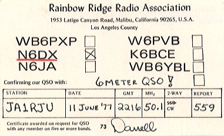

CQ誌1977年8月号のV-UHF BAND NEWSで紹介したものです：(JA1RJU 小笠原)
50MHz・忘れられないあの時 ! |
|
【50MHzでWが多数入感、交信 !】
“この時期にWが入感するなんて”誰もがはじめは自分の耳を疑ったほど、それはあまりにも信じられないことでした。 5日の朝、JA1UIU、JE1HYRなどが、50.130MHzでJA1とQSOしている陸前高田市の移動局をワッチしていたところ、 06:55JST頃になって、同じ周波数で英語のQSOが聞こえてきたのです。 コールサインをよく聞くとこれがなんとWB6ECD/6 ! 相手はどうやらWA7UFJのようです。 そうとは知らず、QSO中のJAの2局は“Guamの局が入感してきた”などとQSOを続けています。 JA1UIUが2、3度ブレークしても応答がないまま、W同志のQSOは07:05JSTに終了。 とたんにこの周波数はWB6ECD/6を呼ぶJA'sですさまじいパイルアップとなったのです。 JA1UIUに最初の応答があり、ここに7年ぶりのJA−WのQSOがSSBで行なわれたのです。 このときの信号は強力で10,000km近く離れたところからの信号とは思えないほどでした。 初めのうち、W側でもJAからのコールとは思わなかったらしくさかんにQTHを聞き返していました。 どこかのポータブルかメキシコの局と思ったらしいのです。 そして2局目にQSOしたJE1HYRとのQSOでようやくJAからのコールであることがわかったらしく、 相手もこのときになってかなりあわてたようです。 この頃には、W側でもJAとのオープニングに気がついてJA1NVGのCQにWA6ABHがJA2DDNのCQにWB6NMTが応答してきました。 とくに、50.101MHzで入感したWB6NMTはSSBとCWで多くのJAとQSOしました。 これらWの局へのパイルアップと"CQ W""CQ States side"を連呼するJA局で一時バンドは蜂の巣をつついたような状態でした。 Wの信号は、08:20JST頃にはほとんどフェードアウトしましたが、WA6JRAの弱いCWだけが09:00JST過ぎまで入感していました。 あとで受け取ったこれらの局からの手紙によると、WB6NMTは07:18〜08:30JST（6月4日22:18〜23:30GMT）にSSBで3局（JA1，2）、 CWで13局（JA1，2，3，6）とQSO、WA6JRAは08:11〜09:12JST（6月4日23:11〜00:12GMT）にCWで6局（JA1，3，6）とQSOしたとのことです。 最初SSBで入感していたWB6ECD/6、WA6ABHは2、3局とQSOしただけだったようです。 この日は他に、K6ODV、K6DVI、K6JDZ、N6??などの入感リポートがありましたがQSOは出来なかった。 このW-JAのオープニングがあった前後は、W本土においてもコンデションは異常なほどFBだったようで、 米国内のほとんどのエリアが同時に入感したとのことです。 また、昨年7月にJAと50MHzでコンタクトしたことのあるハワイのKH6IJ・野瀬さんからのリポートによると、 6月4日にハワイからW本土が広範囲にオープンして、W1、2、8を除く全エリアが12時間もの長時間に渡り同時に入感するといったコンデションで、KH6IJ、KH6GRU、KH6IAAの3局は多数のW'sとQSOに成功したとのことです。 野瀬さんは、この異常なコンデションが、昨年7月のKH6-JAのオープニングのときと同じ状態だったことから、 今回もKH6-JAのオープニングがあるのではないかと予想し6月4日の夜(日本時間)、 私(JA1RJU)宛てに「5日の朝はぜひ聞くように」と連絡してくれました。 そして翌5日の早朝、KH6の入感を待っていたJA各局が受信したのはKH6ならぬW本土の局だったのです。 このように今回のW-JAのQSO成功の陰には野瀬さんの的確な判断によるアドバイスもあったのです。 この最初のオープニングを逃した局は翌朝に期待したのですが、6日の朝は前日とはガラリとコンデションは変わって、 Wからの電波はおろか国内のEsさえ弱々しいといった状態で、気まぐれな50MHz帯の伝搬をあらためて知らされたのでした。 しかし、この日のオープン以来“CQ DX”をコールするシグナルが早朝から連日聞こえるようになり、 早起きをする50MHzのDXerが増えました。 W-JAのコンタクトは、北米側でもビッグニュースであるのは変わりなく、初オープニング後、手紙やHF帯を通じて多くの情報が短期間で交換されました。 そしてW-JAのコンタクトのために多くのスケジュールが組まれたのです。 日曜、月曜の朝(Wでは土曜、日曜の午後)を中心に組まれたスケジュールが次のオープニングの目標となったのです。 そしてチャンスは1週間後の6月12日(日曜日)の朝に早くも訪れました。 この日、06:30JST頃に、50.105MHzでW6PVBのCWが入感してきたのです。 信号は弱くJAからのコールに応答のないままW6PVBは50.095MHzにQSYしました。 06:45JST、JA1RDWがこの局をコール、この日の初QSOに成功しました。 その後、同じ周波数でN6DXともQSO出来ましたがコンデションは悪く、ノイズすれすれの信号でした。 しかし、06:58JSTにJA1LZKがW6PVBとQSO、07:15JSTにJA1RJUがW6PVB、N6DXとQSOする頃から信号も若干上がり、 50.095MHzは再びJAのパイルアップとなったのです。 この日は50.091MHzでWA6JRAも入感、この2つの周波数でJAのパイルアップが09:00JST頃まで続きました。 北米側からの手紙によると、この日はW6PVBが06:45〜09:00JST（6月11日21:45〜00:00GMT）に12局のJAとCWでQSO。 WA6JRAは07:43〜08:34JST（6月11日22:43〜23:34GMT）にCWでJA1を4局、JA7と1局QSOしたとのことです。 N6DXのQSOは2局だけだったようです。 翌13日にはJA7、0の一部に入感、JA0AGAが07:19JSTに、JA7QVIが07:45JSTにW6PVBと50.095MHzのCWでQSOしました。 北米の信号はJA1以西では確認できず、この日のコンデションは狭い範囲のオープニングだったようです。 この日は、W6PVBの他にWA6JRA、WB6VIN、WB6CMDが入感、W0MRHの入感もリポートされています。 その後、6月14日に“K6”とQSOしたとのリポートもありますがこれは"未確認"です。 また6月17日にもWA6JRAが08:20〜08:40JST頃に入感しましたがQSOは出来ませんでした。 WA6JRAからの手紙によると、6月6日09:06〜09:08JST（00:06〜00:08GMT）にもJA1と1局QSOしているとのことです。 短時間の入感でしたが、RST569/599で信号は強力だったと。 6月26、27日の朝にJA7で入感があったとのリポートがありますが、詳細は不明。 これらの入感が全て"本物"であるなら、6月中に8回（6月27日現在）もオープンした事になります。

従来50MHzのオーバーシーズの"DXシーズン"は「春と秋」というのが常識でしたし、Esシーズンは国内DX専門、 Esシーズン中には海外との"超DX"のQSOは無理、サンスポットが100以上にならないと北米(W)とはQSOは出来ない... などなど、すべて今回のオープニングには当てはまりませんでした。 今までのＦ2による北米とのオープニングは11月が最良でしたし、事実過去の記録をみてもこの時期以外の入感は記録されていません。 Ｆ2層による伝搬においてはこの時期が最良であることは、今までの記録が示す通りですが、 F2層が使えないサンスポットも低い時期でも同じように"超DX"とQSOが出来る方法があったのです。 それが今回のようなEsによるマルチホップの伝搬だったのです。 昨年のKH6とのQSOでは“特別”な伝搬ではないかとEsのマルチホップを"見過ごして"しまったのですが、 今回のオープニングでEsによるマルチホップの"超DX"への伝搬の可能性をわれわれは知ることが出来たのです。 いままでの「春と秋」のDXシーズンだけではなく、1年のうちのかなりの期間にわたってDX QSOの可能性があるということもです。 ただし、F2層、Es層、TEPなどによるそれぞれの伝搬にはそれぞれに最盛期がありますのでこれから“Esで年中WとQSOできる”などと考えてしまわないようにしてください。 F2層が使えない時期にはEs層でとか、時期によっていろいろなルートが使えるということなのです。 サンスポットが上昇すれば、今まで通りF2伝搬で11月前後に北米とのQSOのチャンスはあるのです。 ただ、これからは11年周期のサンスポット最盛期のF2によるチャンスだけでなく、 1年ごとのEsシーズンにもDX伝搬のチャンスが巡ってくるということに目を向けさせたことで、 50MHzのDXとのQSOの楽しみがより増したと言えるでしょう。 |
【北米からの手紙】
[N6DX・W6PVB：(Rainbow Ridge Radio Association)]
W6PVB N6DX
Fred Morris L.Darrell Bevan
2627 Castillo Cir, Thousand 1562 Devonshire Ave.
Oaks,California 91360 U.S.A. Westlake Village,
California 91361 U.S.A.
 私たちは、200Wに85フィート高のワイドスペースの8エレ八木でオン・エアしています。 リグはコリンズのSライン（32S3、75S3B）にYAESUのFTV-650それにSB220（50MHzに改造）を使っています。 QTHはロスアンゼルスの北西部の3000feetの山の上です。アンテナは先週上げたばかりです。 最初のオープニング（6月5日）はアンテナがなくて出られませんでしたが6月11日、12日（注：日本で12、13日）の2日間で14局のJA'sとQSO出来ました。 もっと多くのJAとQSOしたいのですが私たちのQTHは高圧線からのノイズが多く、Sメーターはいつも3〜4振りっぱなしです。 コンデションが悪くなる前にもっとQSOしたいと思っています。週末にはアンテナをJAに向けて出ていますのでよろしく。 |
[WA6JRA] Sam Goda 1815 N.Woodside St.Orange, California 92665 U.S.A.6月4日（日本では5日）のオープニングでは、23:00〜00:12GMTに6局のJA's（1,3,6）と50.099MHzでQSOしました。 また6月6日00:06〜00:07GMTに4局のJA1、1局のJA7とQSO出来ました。 通常私は50.091MHzでオン・エアしていますが、バンドがオープンすると50.100MHz付近の周波数はWの局でQRMになってしまい、 DXからの弱い信号は聞こえなくなってしまいます。QRMがあるときはスプリットフリケンシィーでオン・エアすることもあります。 私の送信周波数は50.091MHz、そして“QSX TEN DOWN”をアナウンスします。JAの局は、50.081MHzでコールしてください。 
 |
[WB6NMT] L.N.Anciaux 4519 Narragansett-Ave San Diego, California 92107 U.S.A.私のリグは、TRIO(KEN WOOD)のTS-600に4CX1000Aのアンプを使っています。アンテナは8m高の5エレ八木です。 QTHはLoma Hillの西の端で、海抜が約280feetあります。JA方向の西から北西方面はアンテナの先は直ぐ崖のようになっていて水平線まで見渡せる場所です。6月4日（日本の5日）のオープニングではSSBで3局、CWで13局とQSOしました。 そのほかにコールが取れなかった局、呼んでも応答のなかった局が5〜6局ありました。 6月11日（日本の12日）はVHFコンテストでW6XJを運用しており、Home QTHにいなかったのでQSOは出来ませんでした。 次のオープニングの時にはぜひここにいて、またコンタクトしたいと思っています。 土、日曜日に行なわれたコンテストでは50MHzで600局以上とQSOしてKL7を除く49州と出来ました。 KL7とQSO出来れば“One weekend WAS”完成の世界記録ができるところでした。 最後に日本の局に一言。DXをコールする時はあなたたちのコールをもっと言うようにして下さい。 私のコールを言う必要はありません。私のコールはしょっちゅう聞いているので判っています。 私が知りたいのはあなたたちのコールなのです。 |